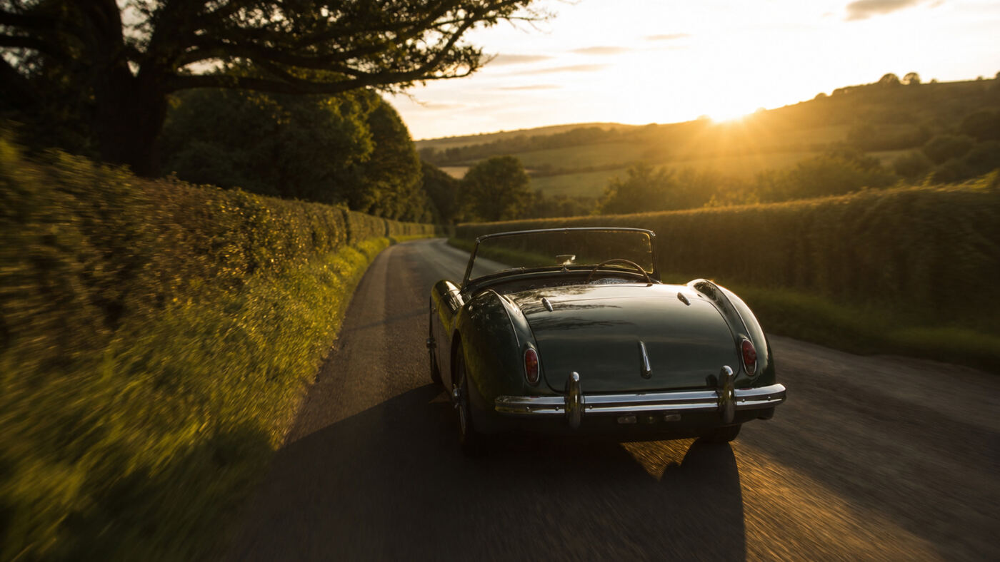

Austin-Healey 3000
The big Healey rots in the sills and the rear shroud — structural work long before it is cosmetic.

British Auto Restoration
Concours restoration of Jaguar, MG, Triumph and Healey — San Martin since 1988.
Est. 1988 · San Martin
A family workshop for British sports cars — Concours when it earns it, sorted for the road when that is the point.
Union Jack has restored Jaguar, MG, Triumph, Austin-Healey, Mini and the rest under one roof in San Martin since 1988: engines and gearboxes, suspension, brakes, wiring, metalwork, paint and upholstery. John and Marcello Locascio have run it together from the start.
No surprises
Written estimates. Parts sourced first. Progress you can see.
A full look before any number — what it needs, what can wait, what to leave alone.
A stage-by-stage breakdown so you can see the money and say no to any part.
Warehouses, specialists, UK contacts — knowing a part exists keeps the schedule honest.
Reviews with photographs. Visit whenever you like — the car is yours.
We stay with cars we build, often for decades. Call Marcello if something needs attention later.
From the shop
The big Healey rots in the sills and the rear shroud — structural work long before it is cosmetic.

That shape shows every ripple in the metal.

The body lifts off whole — back to bare frame and up again.

Timber-framed body on a separate chassis.

Panel gaps and chrome tell whether the shell was supported properly.
In the workshop
Austin-Healey 3000 — bodywork in progress, then finished paint. Drag the handle.


Reputation
Marcello is the one to talk to about British cars. I bought a 1957 MGA with records from Union Jack and he walked me through the whole restoration they had done on it.
Google review · More reviews · Google listing
FAQ
A body-off restoration of a British sports car generally runs into the tens of thousands of dollars, and a concours-level car can cost more than the finished car is worth. The honest answer is that no one can quote you accurately from a photograph. We assess the car, then give you a written estimate and a stage-by-stage worksheet before any work starts, so you decide what is worth doing.
A full body-off restoration typically takes twelve to twenty-four months. The single biggest variable is parts: a car needing rare trim or a specific gearbox can wait months on one component. We search for parts before starting so the schedule is based on what we can actually get.
Yes. We regularly work on cars shipped in from other states and can recommend enclosed transporters. Most of our local work comes from between San Francisco and Monterey Bay, but the shop has built cars for owners across the country.
A rolling restoration means the car stays usable while it is worked on in stages — brakes and suspension one winter, paint the next. It spreads the cost over years and keeps you driving. It suits a car you want to enjoy rather than show.
No. British sports cars are what we are known for, but we restore and repair classic American cars and trucks too — Chevrolet, Ford, Plymouth and Buick among them — along with other European makes.
Yes, and we would rather you did. We hold progress reviews at each stage and you are welcome at the shop during opening hours. It is your car.
Contact
Tell us what you have and what you want from it. We look at the car before quoting.
13555 Depot Ave
San Martin, CA 95046
(408) 686-1101
info@unionjack.com
Mon–Fri 9am–5pm
Saturday by appointment
Sunday closed